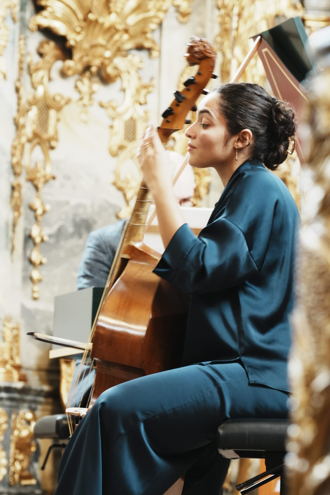
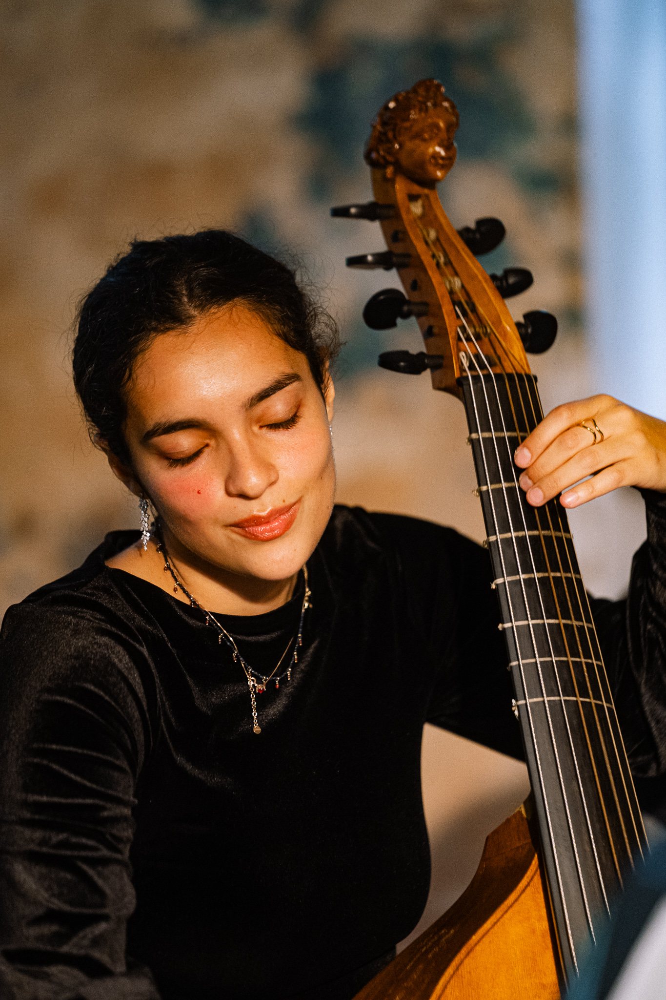

Viola da gamba
Education
Bianca Cucini, born in Florence in 2001, began her musical studies at the age of four with the piano and, at the age of seven, with the viola da gamba at the Scuola di Musica di Fiesole, where she studied with Bettina Hoffmann until 2019. From 2020 to 2025, she studied with Paolo Pandolfo at the Schola Cantorum Basiliensis in Basel, where she obtained both a Bachelor’s and a Master’s degree in Musical Performance. She is currently completing a Master’s degree in Music Pedagogy under the guidance of François Joubert-Caillet.
Concert activity
She currently performs extensively across Europe, including in Switzerland (Erasmus Klingt Festival, Les Riches Heures de Valere – Sion Festival), Germany (International Handel Festival Göttingen, Potsdam Sanssouci Music Festival, FEL!X Festival of the Cologne Philharmonie, Bachfest Leipzig), Italy (Monteverdi Festival Cremona), Spain (Contratemps Festival in Sant Cugat – Barcelona), Belgium (Brussels Early Music Festival FestiVita!), the Czech Republic (Collegium 1704 Vzlet, Prague), Austria (Innsbruck Festival), as well as Portugal, France, Lithuania, among others.

Awards & competitions
Collaborations
She collaborates with leading Baroque ensembles such as Gli Incogniti, Voces Suaves, La Chimera and Mare Nostrum. Among her most significant engagements are concerts in Switzerland and Germany, including at the Kölner Philharmonie, where she has performed as a solo viola da gamba player with Gli Incogniti and Amandine Beyer.
Learn more →